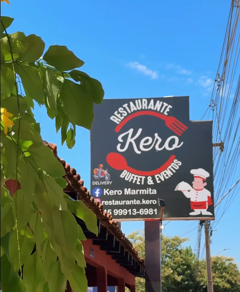

O Restaurante Kero é um estabelecimento que vem ganhando destaque nas redes sociais, especialmente no Instagram, onde compartilha fotos dos seus pratos e do ambiente para atrair clientes. Conhecido por oferecer refeições simples, saborosas e com ótimo custo-benefício, o restaurante aposta em porções bem servidas, com opções que vão desde marmitas completas até pratos com carnes grelhadas e acompanhamentos tradicionais brasileiros. O ambiente é descrito como acolhedor e ideal tanto para refeições rápidas no dia a dia quanto para encontros em família, transmitindo uma proposta de comida caseira com qualidade e atendimento acessível.